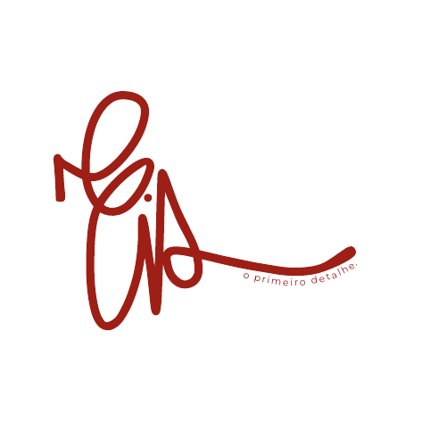

Identidade visual
Conceito, paleta, tipografia e elementos gráficos que dão uma linguagem própria à celebração.
identidade para celebrações
Criamos universos visuais para histórias que merecem ser celebradas — do convite aos pequenos detalhes que fazem tudo ter sentido.
conheça a EIS ↓
01
A EIS nasce para transformar essa ideia em identidade. Não criamos apenas convites: pensamos na linguagem visual que atravessa toda a celebração, criando coerência, memória e personalidade.
Cada projeto começa ouvindo uma história. O resto ganha forma a partir dela.
02
Conceito, paleta, tipografia e elementos gráficos que dão uma linguagem própria à celebração.
O primeiro contato dos convidados com o universo que está por vir.
Menus, tags, lembranças, sinalização e peças que conectam cada momento à mesma história.
03
Este espaço está pronto para receber os primeiros projetos da EIS.
04
o processo EIS
Conhecemos vocês, a celebração e tudo aquilo que não pode faltar.
Traduzimos referências e sensações em uma direção visual única.
A identidade ganha forma e começa a atravessar cada peça.
Construímos os pontos que fazem a experiência parecer inteira.
tem uma história para celebrar?